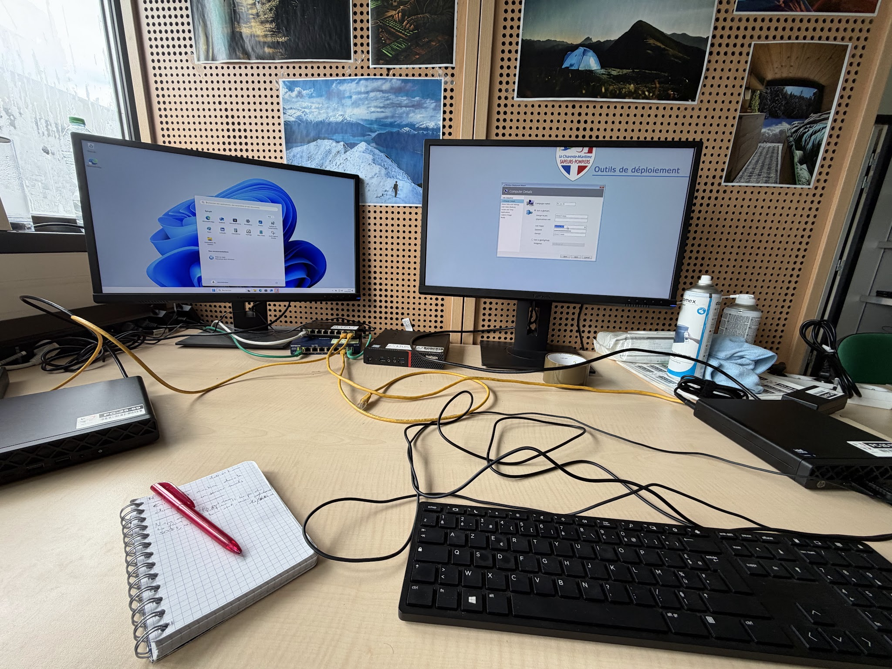
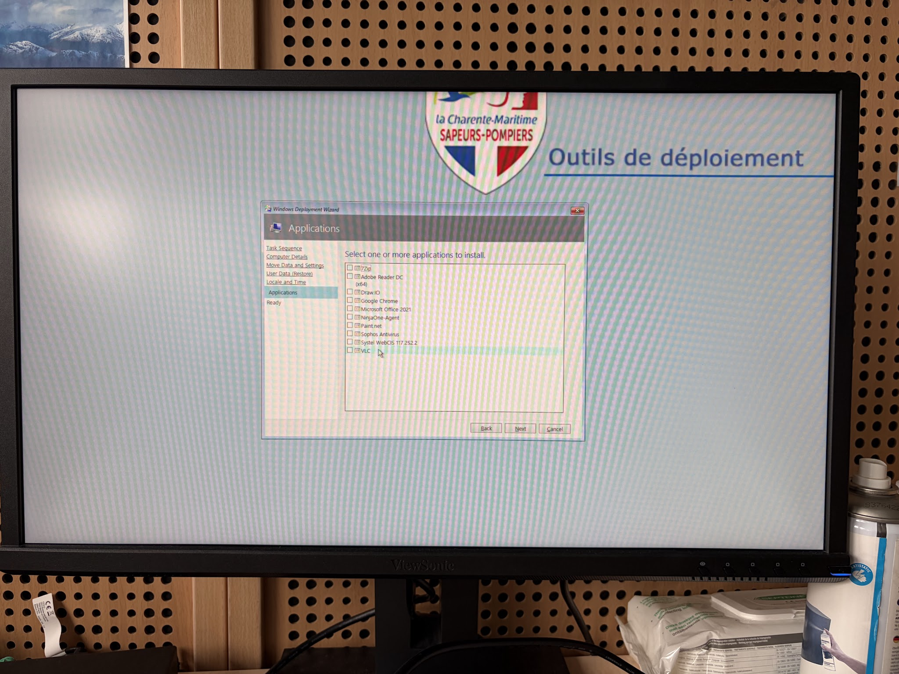
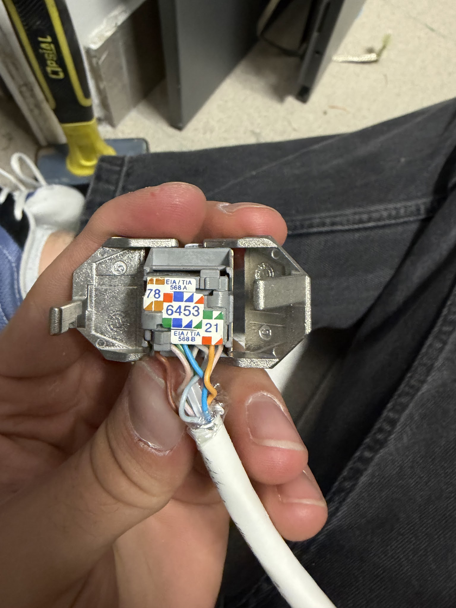
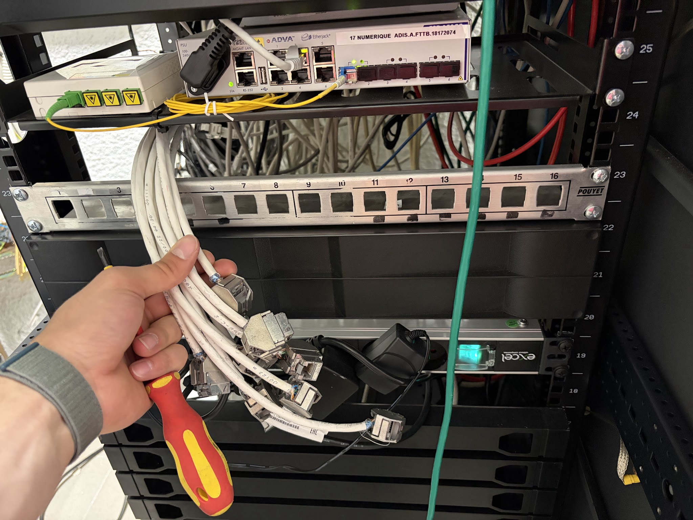
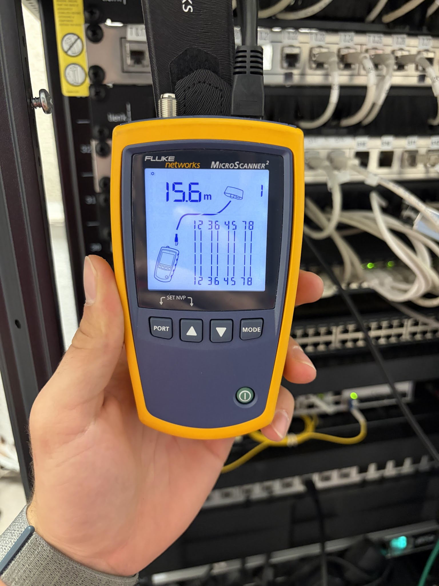

$ cat whoami.txt
USER: Yanis Vedeau
[STATUS] : Étudiant @ BTS SIO SISR (Lycée Merleau-Ponty - Rochefort)
[PROFIL] : Administrateur Systèmes & Réseaux | Sapeur-Pompier Volontaire & BNSSA
> Spécialisé dans l'infrastructure réseau (VLANs, Switchs Aruba/Alcatel, Fluke), le déploiement système (WDS/AD, NinjaOne RMM) et l'administration de bases de données (SQL/DBeaver, SIG).
> Rigueur, réactivité et sang-froid forgés par un engagement opérationnel au SDIS 17 (SPV & Nageur Sauveteur).
$ ./get_capabilities.py
COMPÉTENCES_TECHNIQUES & CERTIFICATIONS
- Switchs Aruba 6000 & Alcatel-Lucent (VLANs, Trunk, MobaXterm)
- Procédure Password Recovery & Reconditionnement
- Câblage RJ45 T568B, baies & recettage Fluke MicroScanner
- Systèmes embarqués (BER, radios, antennes, caméras points hauts)
- Windows Server, Active Directory, GPO & Serveur WDS
- RMM NinjaOne (Supervision & télédistribution automatisée)
- Bases de données SQL, requêtage & dédoublonnage (DBeaver)
- SIG (Systèmes d'Information Géographique / MyStart)
- BNSSA (Brevet National de Sécurité et Sauvetage Aquatique)
- PSE1 & PSE2 (Premiers Secours en Équipe - SDIS 17)
- Certification Pix (501 points)
- Brevet National de Jeune Sapeur-Pompier (JSP)
$ ./load_stage_details.sh --target=SDIS17_NUMERIQUE --duration=6_WEEKS
STAGE_1ÈRE_ANNÉE [05/2026 - 06/2026]
- Déploiement WDS/AD : Enrôlement de postes sur le domaine Active Directory via serveur WDS du SDIS.
- Migration CIS La Rochelle-Villeneuve : Préparation et migration des données utilisateurs pour le renouvellement du parc.
- RMM NinjaOne : Prise en main de l'outil, télédistribution d'applications (paquets VLC) et configuration IP d'imprimantes distantes.
- Déploiement matériel : Raccordement de moniteurs sur les sites de l'Île de Ré et l'Île d'Oléron.


- Chantier câblage (CIS Villeneuve) : Perçage, tirage de 10 liaisons réseau et raccordement sur noyaux blindés à la norme T568B.
- Repérage & Brassage : Intégration sur bandeau Pouyet et affectation des ports (PC NexSIS, imprimante d'alerte, boîtier Sysbox).
- Recette & Qualification : Test de continuité Wiremap et mesure de longueur (15.6m) validés au Fluke MicroScanner².



- Lab Switchs Aruba 6000 : Configuration via MobaXterm (VLAN 10 Admin, VLAN 20 Ops, Trunk ports 23/24, DHCP) et validation de l'isolement inter-VLAN.
- Maintenance de proximité : Remplacement de 5 PC et 3 Écrans Interactifs (CFIS, Ars-en-Ré, La Flotte) + sonorisation d'alerte (Gémozac, La Tremblade).
- Audits & Métier : Prérequis NexSIS à Marennes/Royan, étude Fibre Noire dédiée (Systel) et immersion au CTA-CODIS.
- Déploiement NexSIS (St-Martin-de-Ré & Marans) : Intégration des boîtiers d'interface Sysbox, boîtiers d'acquittement et consoles d'alerte.
- Mise en production : Décommissionnement du câblage obsolète et intégration en baie du switch Aruba 6000 préparé en Lab S3.
- Atelier & Sonorisation : Diagnostic de panne sur Sysbox défectueuse et câblage complet de haut-parleurs d'alerte à St-Martin-de-Ré.
- Caméras feux de forêt : Maintenance préventive sur châteaux d'eau/tours de guet (Ré/Oléron) et vérification des flux vidéo vers l'État-Major.
- Systèmes embarqués : Remplacement de 14 BER (CIS Villeneuve), dépannage GPS/Radios (Rochefort) et maj firmwares en atelier.
- Reconditionnement Alcatel : Procédure de Password Recovery par liaison console série et reset d'usine de switchs Alcatel 24 ports.
- Maintenance réseau & dépose : Mises à jour de firmware sur 6 switchs Aruba 6000CX (48p) et retrait d'anciennes antennes bips et switchs obsolètes.
- Analyse BDD (DBeaver) : Étude de la structure des tables RH/Ops, contrôle d'intégrité et dédoublonnage de données via outil interne.
- SIG (Cartographie) : Traitement et intégration des données cartographiques pour l'application de navigation opérationnelle MyStart.
$ ./render_e5_grid.py --student="Yanis Vedeau"
TABLEAU_DE_SYNTHÈSE_E5 [OPTION SISR]
| Réalisations Professionnelles | Période | Gérer le patrimoine | Incidents & Demandes | Présence en ligne | Mode projet | Service à dispo. | Dev. personnel |
|---|---|---|---|---|---|---|---|
| // MISSION_STAGE_SDIS_17 (CARNET DE BORD 6 SEMAINES) | |||||||
| S1 : Enrôlement WDS/AD, migration de données (CIS Villeneuve), télédistribution NinjaOne et installation de moniteurs | 05/2026 | [X] | [X] | [X] | |||
| S2 : Câblage structure réseau NexSIS (10 prises RJ45 T568B, baie), recette au testeur Fluke MicroScanner² | 05/2026 | [X] | [X] | [X] | |||
| S3 : Maquettage en Lab de switchs Aruba 6000 (VLANs/Trunk/MobaXterm), maintenance ENI/sonorisation et immersion CTA-CODIS | 05/2026 | [X] | [X] | [X] | |||
| S4 : Intégration matérielle infrastructure NexSIS (Sysbox, boîtiers d'acquittement), mise en production Aruba et diagnostic atelier | 06/2026 | [X] | [X] | [X] | |||
| S5 : Maintenance préventive/corrective équipements feux de forêt (caméras/points hauts), embarqués (BER/radios) et Password Recovery Alcatel | 06/2026 | [X] | [X] | [X] | |||
| S6 : Mises à jour de firmwares switchs Aruba, analyse/dédoublonnage de tables SQL (DBeaver) et intégration de données SIG (MyStart) | 06/2026 | [X] | [X] | [X] | [X] | ||
| // MISSIONS_DEUXIÈME_ANNÉE | |||||||
| --- [LOCKED / PENDING_YEAR_2] --- | |||||||
$ ./get_background.sh
ENGAGEMENTS & EXPÉRIENCES
Saisonnier (07/2026 - 08/2026)
- Surveillance des zones de baignade et sauvetage aquatique.
- Application des gestes de premiers secours (PSE1/PSE2).
CIS Rochefort (Depuis 07/2025)
- Opérationnel en secours à personne et incendie.
- Brevet National de JSP obtenu après 3 ans de formation.
Distinctions et Bénévolat
- Lauréat du Prix du Jeune Méritant (Ordre National du Mérite).
- Bénévoles Cashless @ Stéréo Parc (Gestion terminaux NFC).
- Volontaire Service National Universel (SNU).
$ ./ping_host.sh --user="Yanis Vedeau"
ME_CONTACTER
📧 EMAIL : yanis.vedeau@outlook.fr
📞 PHONE : 06 04 10 64 97
📍 LOCATION : St-Agnant (17) | Permis B
🐙 GITHUB : github.com/yanisvedeau-Igtm